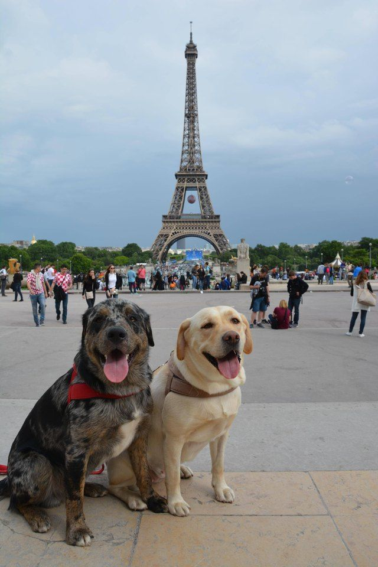

The Louvre is the biggest art gallery and museum in the world, housing more than 38,000 works of art, including the Mona Lisa, the most well-known painting ever. The Louvre was visited by 10.8 million people in 2018, making it the most popular gallery on earth.

Contrary to common belief, Paris's most popular landmark is not the Eiffel Tower. The fourth most visited monument in Paris is the Eiffel Tower. When it was first constructed, the Eiffel Tower was not well-liked. Despite it being one of the most adored and often visited buildings in the world today, parisians were initially not fans of the Eiffel Tower. The cathedral Notre-Dame ranks first, he Sacré-Coeur Basilica comes in second, followed by the Louvre Museum and the Notre-Dame Cathedral. When in Paris, be sure to visit them all!
Paris is home to more than 300,000 dogs. Dogs are undoubtedly man's best friend, but Parisians are going above and beyond. It's typical to see dog owners giving their pups to a spa day in Paris since people there genuinely care about their animals and spend close to $500,000 simply to ensure that their dogs receive the greatest care.
Learn more about this wonderful city at: paris.com